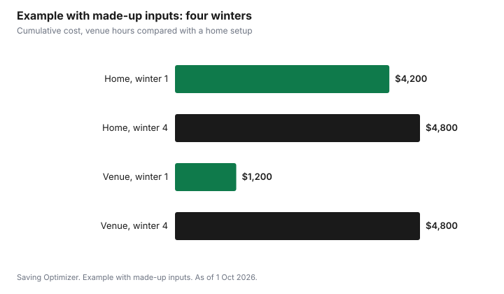

Sports · Canada
Indoor Golf Simulators in Canada: Hourly Rates, Winter Leagues and Home Setups
Indoor golf simulators usually charge by the hour for a private bay, so the cheapest way to play is to split the bay with friends, book off-peak, and buy a membership only if you will clearly use it. As a published reference, Birdie House in Ottawa charges $40 plus HST per hour from 1 November to 30 April and $25 plus HST from 1 May to 31 October, and recommends one to four golfers for most of its bays. That makes a winter hour $10 each plus HST for a foursome. Its monthly membership, $199 plus HST, includes an hour a day and pays off after about five winter hours a month.
Key takeaways
- Most venues price private bays by the hour, so a group shares one rate.
- Birdie House: $40 plus HST per hour in winter, $25 in summer, booked 24/7.
- Its $199-a-month membership includes 1 hour a day and beats hourly rates after about 5 winter hours a month.
- The RA Centre's $217.91 daytime pass cuts the Birdie House rate to $25 on weekday mornings, so it pays off after about 15 winter hours.
- Leagues bundle bay time; check what the fee covers.
- Example with made-up inputs: a home simulator breaks even after about four winters.
How simulator venues price bays by the hour
Venues with private bays often rent the bay rather than a spot per person. Birdie House says it offers one flat rate, 24/7, with no dynamic pricing and no hidden fees, and that you can book any time of day, seven days a week. The RA Centre describes Birdie House bays as booked by the hour through the venue's online booking system. Other venues may charge more at peak times or price by person, so read the rate page closely.
| Season | Dates | Rate |
|---|---|---|
| Winter | 1 Nov to 30 Apr | $40 plus HST per hour |
| Summer | 1 May to 31 Oct | $25 plus HST per hour |
Bay size matters for groups. Birdie House recommends one to four golfers in bays 1 to 5, one to six in bay 6, and one or two in bays 7 and 8. A full round takes longer with more players, so a foursome may need more hours than a pair. Ask the venue how long a round usually takes for your group size, and book a little extra rather than rushing.
Splitting a bay with friends
Because the bay rate is shared, groups bring the cost down fast. At the Birdie House winter rate, a two-hour session costs $80 plus HST. Split four ways that is $20 each plus HST; for a single golfer it is the full $80.
| Golfers | 1 hour | 2 hours |
|---|---|---|
| 1 | $40.00 | $80.00 |
| 2 | $20.00 | $40.00 |
| 3 | $13.33 | $26.67 |
| 4 | $10.00 | $20.00 |
Memberships and passes
Birdie House's monthly membership is $199 plus HST and includes one hour of simulator time per day, rising to 1.5 hours from 1 May. Extra time is billed at the regular hourly rate. It is month-to-month with no initiation fee and can be cancelled with seven days' notice. During peak times (after 5 p.m. on weekdays and after 9 a.m. on weekends), member bookings are limited to bays 5, 7 and 8 until 1 May.
Break-even is simple: at $40 an hour in winter, $199 buys just under five hours, so the membership pays off if you would play more than about five hours a month. A golfer who uses the daily hour most days gets far more value; one who plays twice a month does not.
The RA Centre in Ottawa also sells a Daytime Advantage Annual Pass for Birdie House at $199 plus a 9.5% facility renewal fee, $217.91 plus tax. It gives a preferred rate of $25 plus tax per hour on weekdays from 8 a.m. to 1 p.m., against the $40 regular rate. In winter that saves $15 an hour, so the pass pays off after about 15 weekday-morning winter hours. In summer, when Birdie House's own rate is already $25, the pass saves nothing.
| Option | Cost | Saving | Break-even |
|---|---|---|---|
| Birdie House monthly membership | $199 a month | Replaces $40 winter hours | About 5 hours a month |
| RA Daytime Advantage Pass | $217.91 a year | $15 an hour, weekday mornings in winter | About 15 hours |
Winter leagues: what the fee covers
Some simulator venues run winter leagues over a set number of weeks. Formats and fees vary, so ask what is included before comparing to hourly rates.
| Question | Why it matters |
|---|---|
| How many weeks and hours per week? | Turns the fee into a cost per hour |
| Is bay time included? | Some leagues charge bay time on top |
| Per person or per team? | Changes the split |
| Are handicaps used? | Affects whether beginners enjoy it |
| Are food or drink minimums required? | Hidden cost |
| What if you miss a week? | Subs, credits or lost time |
Using winter to practise instead of play
A full simulated round uses a lot of bay time. Practice sessions get more swings per dollar: an hour on the range mode with launch data can do more for your game than the same hour spent walking through a virtual course. Birdie House says its Trackman simulators capture ball and club data for feedback. Set a goal for each session, such as distance gaps for each club, and use rounds as a reward rather than the default. A lesson package in winter can also be good value if it uses the same data; check the venue's coaching page for prices.
Home simulator costs versus venue hours
A home setup needs a launch monitor, a net or screen, a hitting mat, software and the space to swing safely. Ceiling height and room width decide whether it is possible at all, so measure before shopping. Prices range widely, and software subscriptions add a yearly cost. Compare the total against the venue hours you would otherwise buy.
Example with made-up inputs: home versus venue
These numbers are an example with made-up inputs. They are not store or venue prices. A golfer would buy 40 venue hours each winter at $40, or $1,600, and splits half of those with a friend, so pays $1,200. A home setup costs $4,000 up front plus $200 a year for software. After four winters, the home setup costs $4,800 and the venue $4,800, so it breaks even in the fourth winter, before counting resale value or the convenience of playing at home.
| Winter | Venue, cumulative | Home, cumulative |
|---|---|---|
| 1 | $1,200 | $4,200 |
| 2 | $2,400 | $4,400 |
| 3 | $3,600 | $4,600 |
| 4 | $4,800 | $4,800 |

A winter golf budget
- Estimate how many hours you will really play each month from November to April.
- Find who you can split a bay with.
- Compare hourly rates, off-peak passes and memberships using break-even hours.
- Ask league organizers what the fee covers.
- Plan practice sessions, not only rounds.
- Consider a home setup only if the math works over several winters and you have the space.
For more on choosing between winter fitness options, see gym versus home workouts.
Sources
- Birdie House, Hourly Rates and Memberships, birdiehousegolf.ca, as of 1 Oct 2026. Seasonal hourly rates, bay group sizes, membership terms and peak-time rules.
- RA Centre, Indoor Golf at Birdie House, racentre.com, as of 1 Oct 2026. Daytime Advantage Annual Pass fee, preferred and regular rates, eligible hours.
- The league questions and budget steps are planning tools written for this guide.
- The home setup, software and venue-hours figures in the example are an example with made-up inputs.
Frequently asked questions
How much does an indoor golf simulator cost per hour?
It varies by venue. As one published example, Birdie House in Ottawa charges $40 plus HST per hour from 1 November to 30 April and $25 plus HST from 1 May to 31 October.
Is a golf simulator rate per person or per bay?
At Birdie House, private bays are booked by the hour, so a group shares the rate. It recommends one to four golfers for most bays; four golfers splitting a $40 hour pay $10 each plus HST.
Is a simulator membership worth it?
Only if you play enough. Birdie House's $199-a-month membership includes an hour a day and beats its $40 winter hourly rate after about five hours a month.
Should I buy a home golf simulator?
Only if you have the space and would otherwise buy many venue hours each winter. Add up the setup, software and the venue hours you would replace over several winters before deciding.
What should I ask before joining a simulator league?
Ask how many weeks and hours are included, whether bay time is extra, whether the fee is per person or per team, and what happens if you miss a week.
Researched and drafted with AI assistance and fact-checked against official Canadian sources. How we create content.
Disclosure: Saving Optimizer has no affiliate relationship with Birdie House, the RA Centre or any simulator brand. Venues are named only as published price references, not as recommendations. Education only.